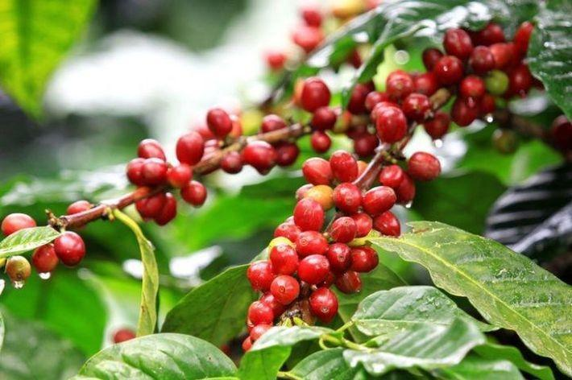
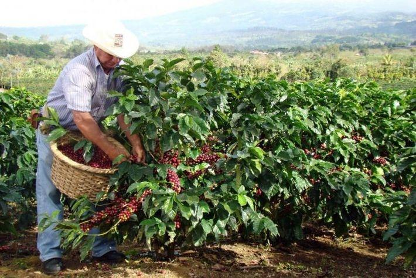

Кофе - уникальный продукт, поклонниками которого являются люди всего мира. В многих странах он даже считается традиционным напитком. А какие удивительные факты и свойства ему присущи?
 1. Кофе находится на втором месте самых продаваемых товаров мира, поступаясьтолько нефти.
 2. Плоды кофе растут на деревьях. Высота кофейного дерева достигает девяти метров, но для удобства собирания плодов их специально выращивают так, чтобы дерево вырастало на 3 метра.
3. Бобы кофе — это зерно, что содержится внутри красной ягоды.